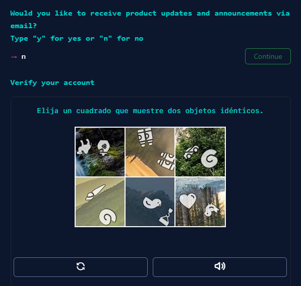
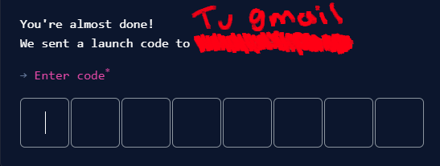
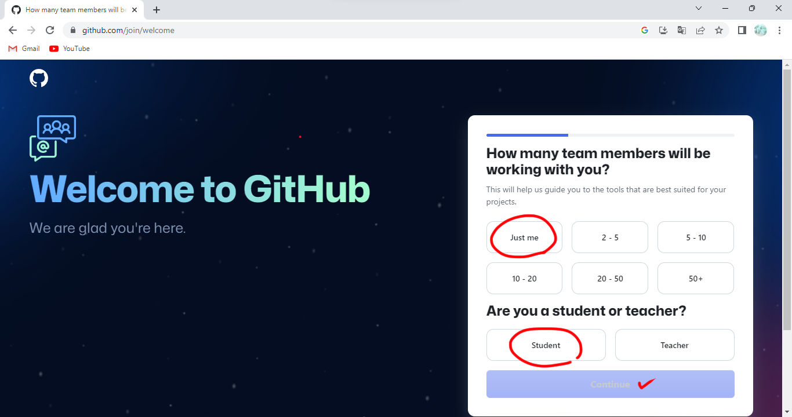

para subir una pagina web primero (ademas de tener el codigo) tenemos que tener una cuenta para tener la posibilidad de subir la pagina al servicio de hosting gratis
Entonces para ello necesitamos buscar la pagina de GitHub y entonces hacer click en el boton de sign up
La pagina te pedira lo tipico para crear una cuenta

Luego te preguntara si deseas recibir notificaciones de la pagina (pon "n") y 2 verificaciones, una de clickear la imagen con dos figuras repetidas y otra donde te manda un codigo al correo para que lo escribas
 Ya solo necesitamos responder unas ultimas preguntas (solo pon lo de la imagen e ignora las otras ya que solo son para moldear el algoritmo con tus gustos como cualquier red social)
